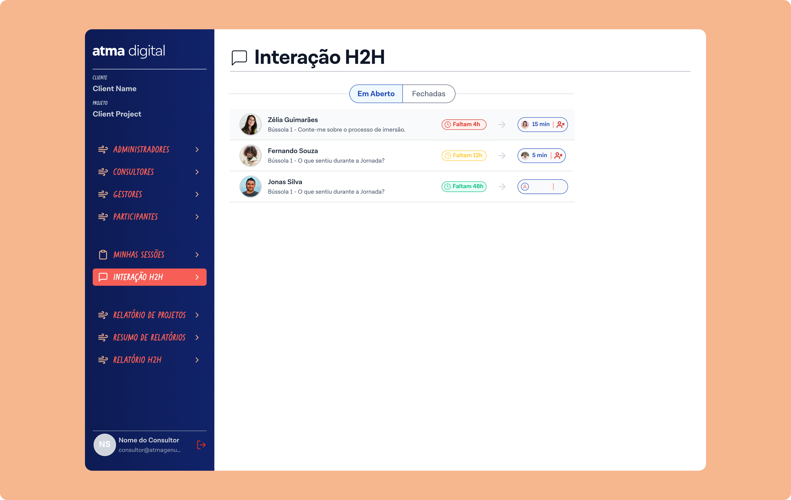
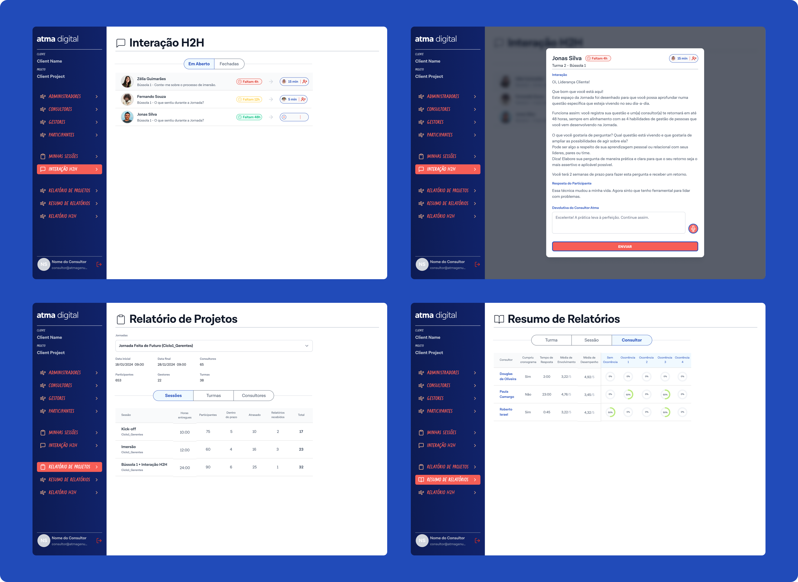
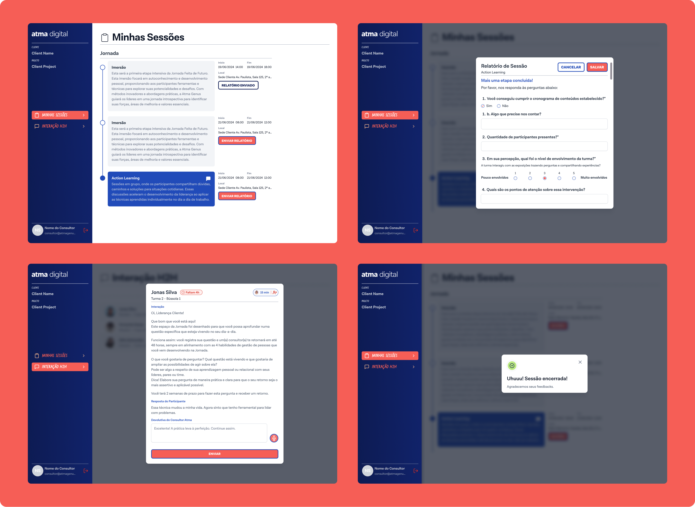
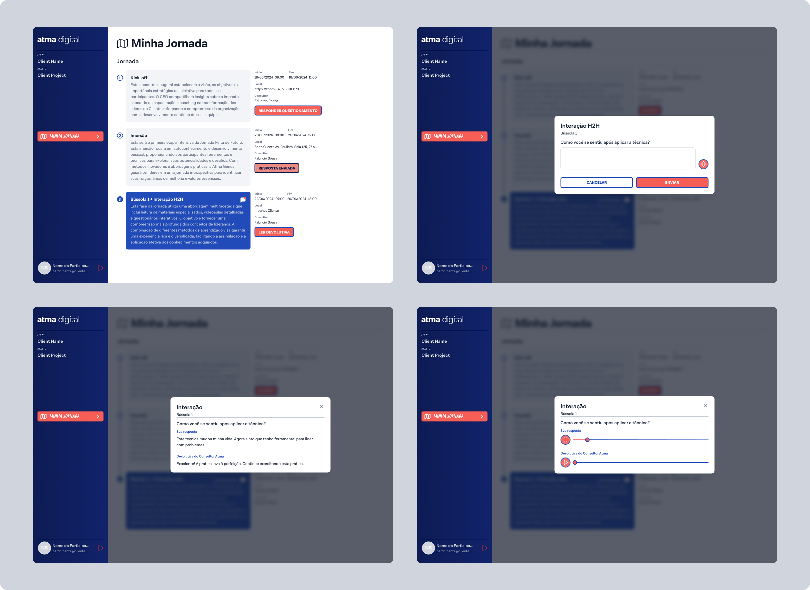
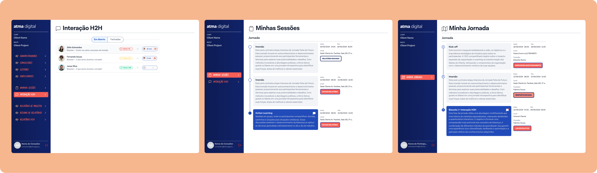
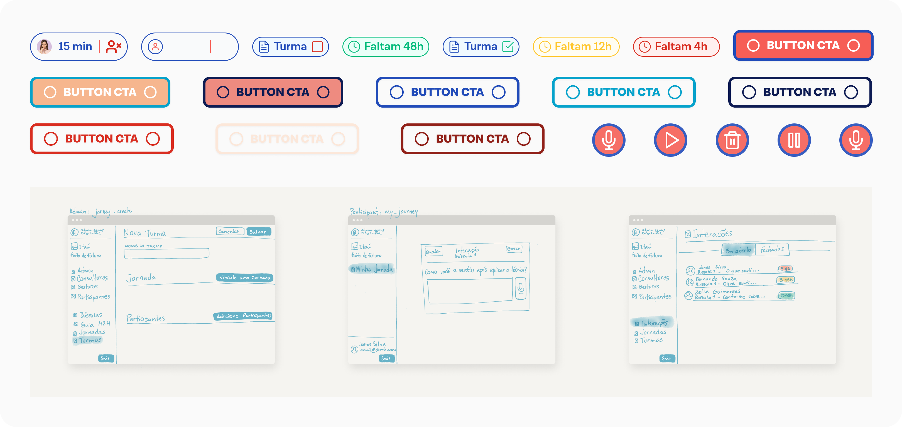

Atma Digital
Leadership Development Platform · UI Design · Web App

Leadership Development Platform · UI Design · Web App

Atma Digital runs structured leadership development journeys for corporate clients — cohorts of managers going through guided sessions, H2H interactions, and reflection exercises over weeks or months. The platform needed an admin interface that could handle the complexity behind those journeys without overwhelming the people using it day-to-day.
I joined a team with an existing UX designer who owned client communication and the style guide. My job was to translate his sketches into polished, functional screens, building new components where the existing system didn't cover the need, and adapting existing ones where it did. I was responsible for both component creation and screen composition across all three user flows.
Three distinct user types with very different needs sharing the same product, each requiring clear hierarchy and consistent visual language, while showing only what each user type actually needed to act on.
High-level operational view: projects, session tracking, reports, status at a glance.
Session management, participant lists, deadlines, and report submission.
Session access, reflection prompts (Bússola), H2H interactions, journey progress.
Project dashboard with client overview, session progress tracking, at-a-glance status indicators (on time, delayed, total deliverables), and a consolidated reporting section with H2H summaries broken down by cycle and session type.

Personal session management, participant lists with confirmation states, deadline countdowns, and session-level detail views.

Session access, Bússola reflection prompts, H2H interaction entry points, and journey progress feedback.

Where the existing style guide didn't cover a specific need — new data display patterns, empty states, confirmation modals, status badges — I designed and documented new components that extended the system consistently.

Key decision 01
The style guide was someone else's foundation. Every new component had to feel native to the existing system, not like an addition from outside.
Key decision 02
Working from hand-drawn sketches required constant judgment calls about spacing, hierarchy, and interaction behaviour with no formal specs.

A complete, handoff-ready UI across three user flows, with an extended component set built directly from sketch hand-offs. The screens cover the full operational lifecycle of a leadership journey — from project setup through session delivery to final reporting.
Tools: Figma · Component Design · Design Systems
Note: client identity is confidential and has been removed from all screens shown.